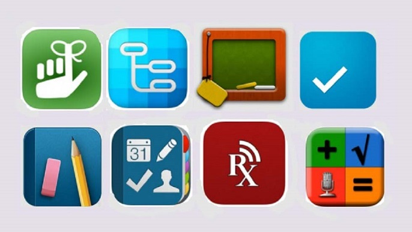

Educación y tecnología, la revolución del aprendizaje
Posted by admin on 5th April 2016

¿Te has dado cuenta de como la tecnología ha cambiado la forma en la que vivimos? La manera en que nos comunicamos, trabajamos, pasamos tiempo de ocio e incluso como aprendemos.
La educación, en sin lugar a dudas la principal base para desarrollarnos y desenvolvernos en cualquier entorno. Al vivir rodeados de tecnología en todos los aspectos de nuestra vida cotidiana no debemos dar la espalda o negar el acceso de ella a la educación.
Está claro que no todos aprendemos del mismo modo, cada uno necesita y se apoya de diferentes métodos y herramientas de estudio.
Aún sabemos poco del alcance y las enormes ventajas de la tecnología en el entorno educativo, es por eso que aquí te presentamos algunos de ellas y la forma en que cambiarían la forma tanto de enseñar como aprender.
APPS
Desde la aparición de la App Store en 2008 se han publicado más de 1 millón y medio de apps solo para iOS, entre ellas existen aplicaciones educativas o con contenido didáctico que harán que aproveches tu Smartphone o Tablet para seguir aprendiendo en cualquier momento. Al tener una app instalada no necesariamente se utiliza el internet, sólo en caso de alguna actualización si se requiere.
Existen aplicaciones de instrumentos, libros, diccionarios, gestores de información, aplicaciones multimedia interactivas y un largo etc. Todas y cada una de las diferentes aplicaciones sirven de apoyo para fortalecer lo aprendido en el salón de clases.
TABLETS
¿Te imaginas asistir a la escuela y solo llevar tu Tablet? Seria genial porque mediante el uso de aplicaciones en ella se puede anotar, trazar, dibujar, leer y escribir. Una Tablet es ahora un material didáctico más práctico que una lap-top u ordenador, debido a su tamaño, manejo fácil al igual que un celular y la capacidad de almacenamiento.
Cabe mencionar que a través de una Tablet y mediante la instalación de apps se puede hacer uso de otras tecnologías como: cámaras, sensores ambientales, GPS, acelerómetros, aumentando así la funcionalidad del dispositivo, siendo una herramienta más potente que los contenidos con solo texto e imágenes.
CURSOS EN LÍNEA
¿Quién no ha hecho lo que ve en algún tutorial en internet? Tomar clases en línea ofrece contenidos como lo son videos, libros o presentaciones. Los cuales se pueden consultar las veces que se requiera así como un tutorial.
Algunas clases dan la opción de chat, foros de discusión, mensajes privados o conferencias online, todo con el fin de resolver dudas o ampliar el conocimiento. Además al estar conectado a internet permite el acceso de forma inmediata a otras fuentes de consulta.
Algo que resalta de un curso en línea son las ventajas de ahorro en tiempo y costos en el traslado al aula, la comodidad de estudiar sin salir de casa y hacerlo al ritmo que mejor nos convenga.
Portales como Coursera, Lynda o Udemy nos ofrecen una experiencia de aprendizaje totalmente distinta al rígido formato que se sigue en un salón de clases, en ellos podemos guardar notas, ver videos, interactuar con otros usuarios, contestar exámenes, a nuestro ritmo y en el lugar que queramos.
Si bien las plataformas educativas complementan los cursos presenciales, se han convertido ya en una parte imprescindible de la oferta educativa actual. universidades como el MIT o Stanford ofrecen un gran número de cursos en línea así como grabaciones de cursos completos en las aulas.
Nos encontramos ante una transformación en la educación, haciendola más accesible y de mayor calidad, sin embargo la situación educativa de America Latina presenta aún un gran rezago, siendo una oportunidad de mejora que pueden aprovechar las empresas de tecnología.